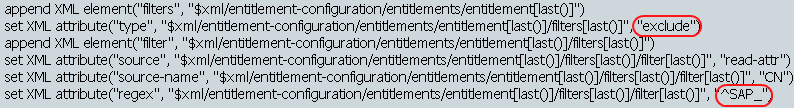

previous
previous


A Tomcat port conflict error occurs when you are starting the Role Mapping Administrator
Stop Role Mapping Administrator.
Edit the /installation_directory/idmrmap/tomcat/conf/server.xml file.
Find the line <Server port=“8006” shutdown=“SHUTDOWN”>.
Change the port to another port that is not in use.
Save the changes, then restart the Role Mapping Administrator by using the following command from the <rma_install_path>/rma/ location.
Linux: ./start.sh
Windows: start.bat
The Role Mapping Administrator uses the following default ports:
8081: Used for HTTP access.
8443: Used for secure HTTP access.
8006: Used by the Tomcat application server.
The Role Mapping Administrator is not accessible when Tomcat is already installed in a system using port 8443
Stop the Role Mapping Administrator.
Change the port. For more information, see Changing the Port Number
in the Identity Manager Role Mapping Administrator 4.0.2 Installation and Configuration Guide.
Restart the Role Mapping Administrator.
You cannot authenticate to the Role Mapping Administrator
The password is not correct.
The username does not exist in the user store.
There are multiple user accounts matching the specified username. Use the distinguished name (DN) instead of the common name (CN).
There are network problems. The user’s credentials are verified against the user store through an LDAP connection.
The LDAP server is not communicating.
If the eDirectory connection is using SSL, the certificate might have expired. Check with your system administrator to confirm whether the eDirectory certificate is valid or has expired.
The user account you are using does not have sufficient rights in the Roles Based Provisioning Module. Check with your administrator to verify that you have sufficient rights to use the Role Mapping Administrator.
You cannot access the Role Mapping Administrator after a successful installation
Start the Role Mapping Administrator after installing it.
Check the <rma_install_path>/rma/tomcat/conf/logging.properties file. Use a different port if the port is already in use.
Stop the Role Mapping Administrator.
Change the port to another port in the <rma_install_path>/rma/tomcat/conf/server.xml file.
Start Role Mapping Administrator.
Expected roles are not being displayed
Expected roles from the SAP Portal are not being displayed
The filter is an XML filter element that is appended to the entitlement configuration object. By default, the filter element contains an attribute type that has a value of exclude. The filter element holds individual filters. Each filter contains the following attributes:
read-attr: The source for the match.
source-name: The attribute on which the regular expression is evaluated against.
regex: The regular expression that is used.
You can modify the regular expression value or remove the value to change how the Role Mapping Administrator filters the results. By default, the regular expression is ^SAP_, which is evaluated as start with SAP underscore.
Figure 1 XML Filter Element
To change the filter so you can see all groups:
Using Designer or iManager, edit the SAP Portal driver policy pub-its-InitEntitlementConfigurationResource on the Publisher channel.
In Policy Builder, select the Entitlements rule.
In the for each action, find the XML element of the filter.
Change the type attribute value from exclude to include.
Remove the regular expression value of ^SAP_.
Save the changes, then restart the driver to have the changes take effect.
Authorizations are not being displayed
Drivers are not being displayed
For trademark and copyright information, see Legal Notices.